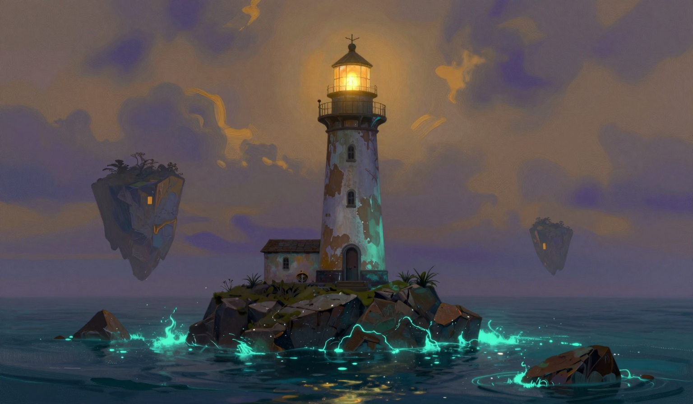

The History of the Drift
What the log remembers before it begins — and what it is still trying to work out.
Before the Log

There was a sea before there was a name for it. The keepers who came before Wren did not call it glowing at first, because nothing so steady as it has any right to be. They called it the Quiet Water, and they wrote, in the oldest surviving page of the log, that it does not move the way water is supposed to move. It does not push. It waits.
The islands were not always nine. The first page says eleven, and the second says ten, and the third says nine, and no keeper explains the arithmetic. The log is honest about this. It says only: the count went down, and nobody was consulted, and the sea did not look up.
What the log does not say, and what the keepers have been circling for four years, is where the ones that went missing went. Not sank. Not drifted. They stopped being where they were, and the sea closed over the fact of them like water over a stone that was never dropped.
The Unraveling

At the far edge of the chart, past the last island the log dares to name, the water stops being water. It comes apart into pale threads, the way a worn rope comes apart, and the threads drift in a direction that is not any direction, and the shapes near them stop being certain. A rock is a rock. Then it is almost a rock. Then the log has to decide whether to record it at all.
The keepers have a rule for this, and it is the only rule in the log that is not about the lamp. You do not name what is in the Unraveling, because naming is what keeps things where they are, and the Unraveling does not want to be where it is. You log the distance to it, you log that it receded or did not, and you leave it the privacy of not being a thing with a name.
It has receded one hand's width on certain days, and on those days the keepers write good and mean it more than they write anything else.
The Lamps, in Order

The log keeps a list of the keepers the way a ship keeps a list of its harbors. Not heroes. Harbors. You stop there because you are tired and the light is on and you know the next keeper will keep it on.
The First Keeper is not named. The log says she arrived on a boat that is no longer in the log, lit the lamp, and did not leave for eleven years, which is the longest any keeper stayed and the number the others measure themselves against without quite admitting it.
The Sixth Keeper went out on a crossing and did not come back, and the log records the crossing with a number for the distance and a number for the fuel and no number for the rest, which is how the log handles a number it will not make up.
The Grandmother is the most recent keeper before Wren. The log refers to her in the past tense and shows no sentiment, which is the sentiment. The light reached her, the log says. That is all the log has room for, and it is the largest thing in the log.
The Cat
The cat is not a character in the log. The log refuses to name it, which the log would not do for anything it considered a thing to be named. The cat is a resident, a fact, a condition of the Keeper's Room that the keepers arrive to and leave from in equal measure.
The cat is consulted on all matters of import, and the cat rules by going back to sleep before the conversation has ended. The keepers have never once disagreed with a ruling, and the keepers have never once been able to say why, and the log treats this as a feature and not a failure of the format.
There is exactly one cat in every keeper's room, in every painting, in every entry, and the log does not explain how the cat moves from one keeper's room to the next across a sea that is full of light and mostly empty. The log has written the cat is where the cat is and considers the matter closed.
Why the Light Must Not Go Out
The job of the Ninth Island is a single verb, and the log has spent four years failing to make it sound smaller. The lamp must not go out. That is the whole post. Not to map the sea, not to name the islands, not to keep the distance honest. To keep the light on.
The log says the light is not for the sea, because the sea is already full of light and does not need a lighthouse. The light is for whoever is crossing. And the crossing, the log has worked out at last, is not a crossing of water. It is a crossing of the line between the things that are where they are and the things that are not yet sure they are. The Unraveling does not send anything. It does not need to. It is the other side of the line, and the line is the light, and the light is a person in a room with a cat, checking the oil gauge at the third bell.
Wren Voss is the Ninth Keeper. The log does not say this with pride. The log says it the way it says everything, which is with a number and a date and a small, unresolvable thing at the end, and the small thing at the end of this page is that the light is on, and the fuel is measured in days, and the sea is full of light, and that is enough, and that has always been enough, and that is the whole of the history.